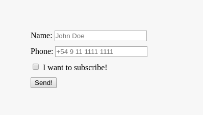

Design + front-end: collaboration without compromising
How can designers and front-end developers understand each other's work to improve both collaboration and implementation of our products
:root {
/* player one */
--author: 'Nicolás Joel Engler';
--job: 'Front-end Developer';
--email: 'hi@nicolasjengler.com.ar';
/* player two */
--assistant: 'Mauro E. Wernly';
--job: 'Front-end Developer';
--email: 'wernly.mauro@gmail.com';
}
Designers and front-end devs:
siblings separated at birth
How can designers and front-end developers understand each other's work,
comprehend what's similar and what's totally different, and later use that
knowledge to get collaboration working like a well-oiled machine rather than
pulling each other's hair off
HTML: HyperText Markup Language or
How To Make Little websites
HTML: components and symbols as tags
HTML tags can be thought of as elements and symbols in a design app like Sketch or Figma.
Do front-end developers know each and every single HTML tag? Absolutely NOT. Front-end development involves a fair amount of googling. HTML is vast and wide, attempting to remember each of its tags is useless.
Although you will most likely find whatever you need on any site that references HTML, "official" channels are recommended:
Why coding when we already have apps and tools with graphical user interfaces to create websites?
Short answer: it depends on what you're looking for. GUI-based tools are great for speedy projects with low-level customization, while coding allows for granular control of assets, styles and interactions.
HTML: dynamic vs static website
What's the added workload to create dynamic websites rather than just editing an HTML document?
(Not so) short answer: static websites are pretty straight forward, write some code, check it out in a browser and watch the result, the caveat is that in order to update its content you'll have to do it manually by editing the HTML document. On the other side of the spectrum, dynamic websites add a layer of complexity that requires several extra steps with the advantage of being able to edit the site through some kind of interface.
CSS: Cascading Style Sheets or Code Super Styles
CSS: What do developers do with CSS and what are its limitations?
An intro to CSS' own box model and n-level limitations. How does CSS work on unstyled HTML element.
CSS: The box model
CSS has a box model in order to organize different properties when styling an element, i.e.: margin, border and padding. This help us understand, for example, where background will be clipped, or where there'll be spacing in between elements when using margins.
CSS: unstyled vs styled
CSS basically allows us to style whatever we want in a page, give it a determined size, background color, drop shadow, border, rounded corners, flow, etcetera. HTML alone looks pretty straight forward: a basic document with little to no style that flows from top to bottom, while HTML + CSS allow us to turn that into something more unique.

CSS: n-level limitations
N-level limitations are basically features of a design that turn into caveats whenever translating those to front-end development.
CSS carries a lot of similarities in its properties with the same properties that design tools have, which can be helpful to plan styles ahead of its implementation. Some examples:
box-shadow & text-shadow in CSS
drop shadows in design tools
border-radius in CSS
corner radius in design tools
font-family,
font-size,
font-weight,
letter-spacing,
line-height in CSS
typography options in design tools
column-count in CSS
columns in design tools
clip-path in CSS
clipping/masking in design tools
CSS: pragmatism vs pixel perfection
Now that we've seen similarities, discrepancies and n-level limitations for CSS, we need to understand why it is good to prioritize pragmatic implementation over pixel perfection:
Graceful degradation avoids polyfill libraries which in turn leave you with a lighter codebase
Native solutions mean less buggy content and completely accesible documentation
Implementation time is way smaller when there's no need for third-party library implementation
Reasonably expectations on delivery
CSS: playtime!
In the previous https://jsbin.com/ tab, in the CSS section, add a background color, color and text shadows for the heading. For the paragraph, add a border and some padding.
Use the following sites in order to get documentation on how to write CSS for those elements. For example:
h1 {
/* your properties and values here */
}
p {
/* your properties and values here */
}
JS: JavaScript or Just Shake things up
JS: What does JavaScript do?
Whenever used for front-end development, JavaScript allows developers to extend the native functionality that HTML and CSS provide. Interactivity is the main use for JS in front-end development but its usage in the development world varies from webservers to package management.
JS: Common usage for the web and assets
Creating and triggering modals and popups
Triggering CSS animations, or animating complex scenes
State-changes in UIs: changing the data, and the UI, seen on screen while keeping the data structure files and databases up-to-date.
Minification of files to carry a lighter load
Concatenation of files to make fewer requests
JS: Common tools
Gulp: toolkit for automating time-consuming tasks in a development workflow
Grunt: a task runner used to automatically perform frequent tasks such as minification, compilation, unit testing, and linting (deprecated)
Webpack: an open-source module bundler. Its main purpose is to transform, bundle, or package files for usage in a browser
Bower: a package manager for third party libraries. Good examples are CSS frameworks like Bootstrap, or libraries like jQuery (deprecated)
Yarn: a new package manager that replaces the existing workflow for the npm client or other package managers while remaining compatible with the npm registry
npm: a package manager for Node.js. It consists of a command line client, and an online database of public and paid private packages
JS: APIs, libraries, and their complexity
Each library has its own purpose and thus its own level of complexity. The libraries that usually interest the most to designers are the ones that give the capability to create visually appealing experiences. A library that allows shape morphing or meshing might be a bit more complex than a library used to add tabulation capabilities like filtering and/or column toggling.


 drop shadows in design tools
drop shadows in design tools